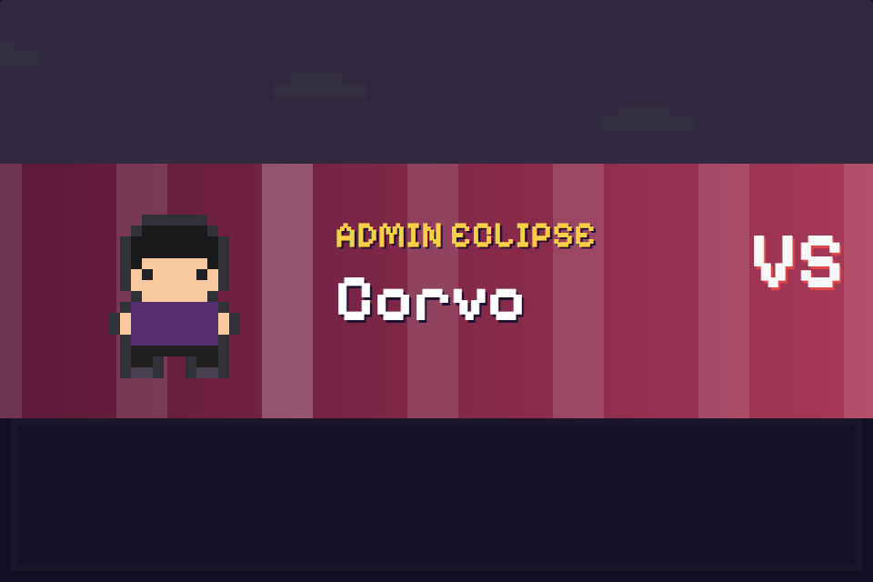
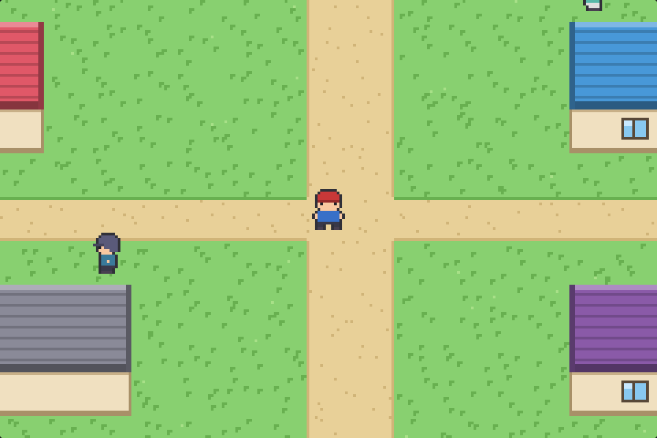

Batalhas com estratégia de verdade
13 tipos com vantagens e fraquezas, 80 golpes, estados como sono e veneno, e efeitos animados para cada tipo.
RPG em pixel art · 100% original
Uma aventura completa com 41 feras inéditas, quatro ginásios e a Equipe Eclipse no seu caminho. Grátis no PC e direto no navegador.

Nenhuma fera copiada de outro jogo. Cada criatura, mapa e batalha foi criada do zero para Aurora.
Do primeiro passo na grama alta até a sala do campeão, são horas de jogo com começo, meio e fim.

13 tipos com vantagens e fraquezas, 80 golpes, estados como sono e veneno, e efeitos animados para cada tipo.

Cinco cidades, rotas com grama alta, um bosque labiríntico, uma caverna de lava e a Estrada da Vitória.

Enfrente a Equipe Eclipse, desafie seu rival quatro vezes e encontre a fera lendária depois de virar campeão.

Teclado, controle de Xbox ou PlayStation, ou toque na tela do celular. O progresso fica salvo no aparelho.
A demonstração abaixo é o jogo completo rodando no seu navegador.
Todas desenhadas em pixel art, com evoluções, tipos e golpes próprios. Toque em uma para ver os detalhes.
Grátis, sem cadastro e sem anúncios.
Escolha o instalador ou a versão portátil, que roda sem instalar.
Se o Windows mostrar um aviso, clique em Mais informações e depois em Executar assim mesmo.
Fale com o Prof. Ipê, escolha entre Brasilho, Pingolim e Folhito e comece a jornada.
Sim. Aurora é gratuito, sem anúncios e sem compras dentro do jogo.
Não. Você pode jogar direto no navegador, logo acima. A versão para Windows existe para quem prefere um aplicativo com atalho e tela cheia.
Sim, pelo navegador do celular. Aparecem um direcional e os botões A, B e Start na tela. O aplicativo Android está a caminho.
Pode. Controles de Xbox e PlayStation são reconhecidos automaticamente, no navegador e no aplicativo.
No próprio aparelho, pelo menu Salvar. Nada é enviado para servidores.
Algo entre 5 e 8 horas para chegar ao final, e mais um pouco para completar a Feradex e capturar a fera lendária.
Não. Aurora é inspirado no gênero de RPGs de captura, mas todas as criaturas, personagens, mapas e a história são originais.
O aviso aparece porque o instalador não tem assinatura digital paga. O código do jogo é aberto e pode ser conferido no GitHub.
Três feras esperam no laboratório do Prof. Ipê. Qual vai ser a sua?